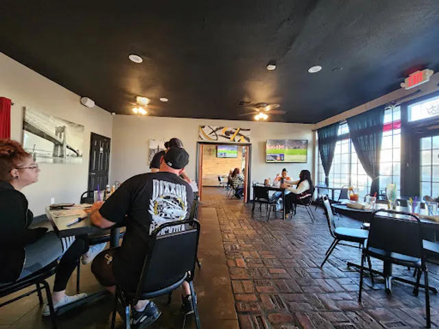
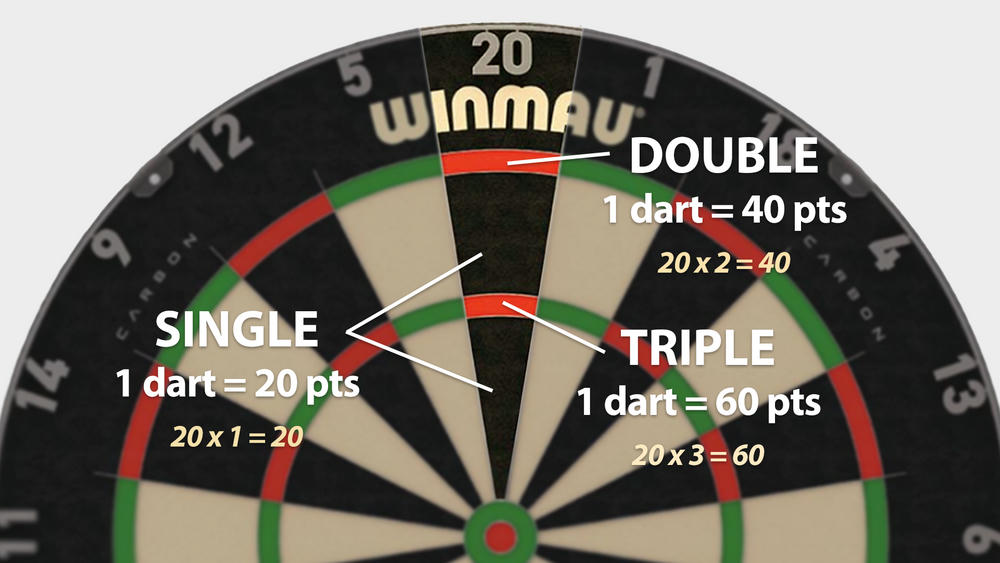
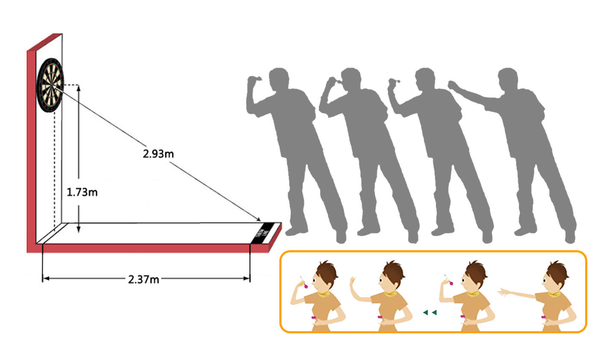
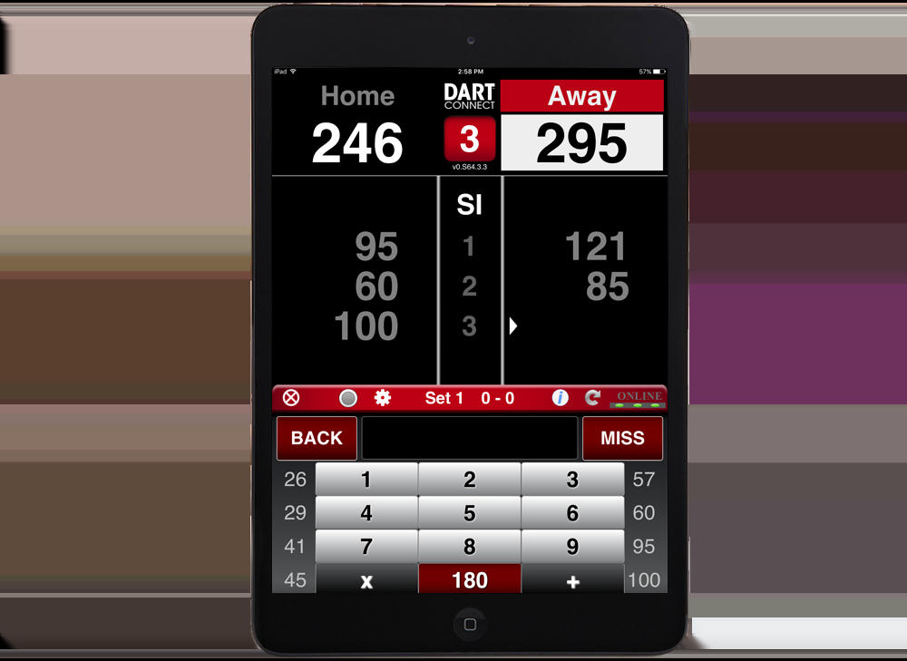
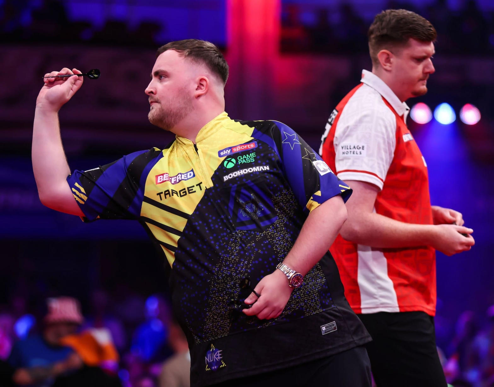
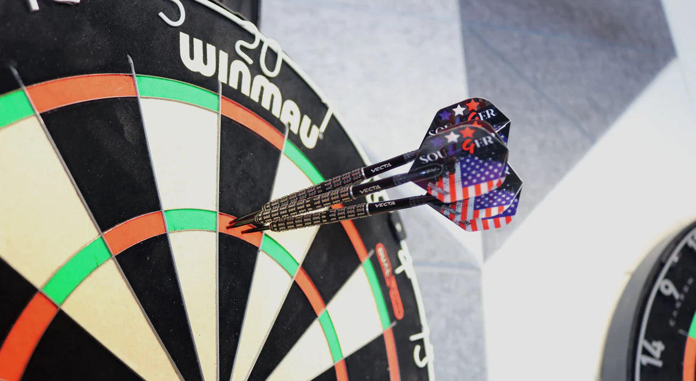

Lincoln Pub interior, Tower District
What 501 Darts Is
501 is the standard competitive darts game used in professional tournaments worldwide. Each player starts at 501 points. Players take turns throwing three darts. The score of the three darts is subtracted from the remaining total. The first player to reach exactly zero wins, but the final dart must land in a double or the inner bullseye.
This is pure skill. Accuracy, consistency, arithmetic under pressure, and checkout strategy decide the winner. A better player beats a weaker one over multiple legs. There is no meaningful chance element.

Single, double, and triple zones on a standard board
Realistic Competitive Setup for a Bar
For competitive play that feels real, use steel-tip darts on a standard bristle board at regulation distance (7 feet 9¼ inches from the face of the board) and height (center of the bull 5 feet 8 inches from the floor). Soft-tip electronic machines are fine for casual coin-op play, but serious 501 uses steel tip.

Standard throwing distance and height
Electronic scoring keeps the math accurate and the game moving. Options include:
- Camera systems (Autodarts, Target Omni, Gran Eye, or open-source equivalents) that watch a standard bristle board and score automatically.
- A wall-mounted tablet running a dedicated scorer such as DartConnect or DartCounter, with manual entry or automatic feed from cameras.

Example of a tablet-based electronic scorer
Cash Prizes Under California Law
California Penal Code section 337a prohibits bookmaking and wagering on contests. There is a clear exception for the payment of a prize for a bona fide contest of skill. California uses the dominant factor test: skill must predominate over chance. 501 darts meets this test.
To stay inside the exception:
- Winner is determined solely by the players' skill on the board. No side bets, no random draws, no overlays.
- Prizes are fixed awards announced in advance, funded by the venue, sponsors, or a predetermined entry fee used only for costs and prizes. Not a fluctuating mutual wager.
- Rules, entry cost, and prize structure are published before play begins.
- Results are transparent and logged by the electronic scoring system.
A separate app can read the scoring system output in real time (API, WebSocket, or screen observation), confirm the winner according to the published rules, and process the prize. The app does not accept bets. It only administers the skill contest.
This structure aligns with the pure-skill, verifiable-performance approach used for other skill contests under California law. The bar runs a competition of skill. The scoring system and secondary app simply make the results clear and the prize administration automatic.
How It Could Work at Lincoln Pub
- Mount a standard bristle board in a suitable space with proper lighting and throwing distance.
- Add electronic scoring (camera system or tablet) so scores are automatic or easy to enter and visible to everyone.
- Announce a tournament (for example weekly singles or doubles 501, best of three legs). Publish the entry fee (if any), prize amounts, and rules in advance.
- Players compete. The scoring system tracks the matches.
- The secondary app reads the final results and releases the pre-announced prizes (bar credit, cash from a prize account, or other fixed awards).
- Keep simple records of scores and payouts.

Competitive steel-tip play

Steel-tip darts on a bristle board
Summary for the Owner
Lincoln Pub can offer competitive, realistic 501 darts with electronic scoring and cash prizes by treating the event as a bona fide contest of skill. The game itself is skill-dominant. Electronic scoring provides fair, visible results. A secondary app can process those results in real time and administer fixed prizes without creating a wager.
This is not legal advice. Prize structure, entry fees, and local rules should be reviewed with a California attorney familiar with skill contests before any paid events begin.